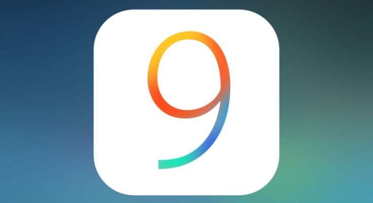
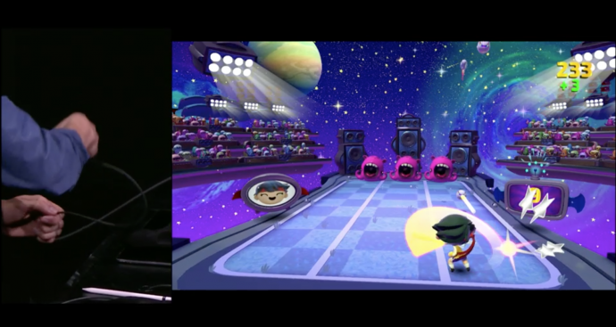
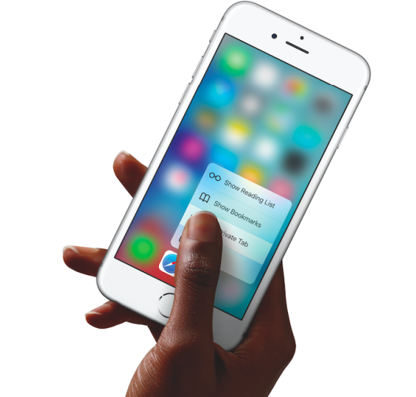

iOS9 will arrive on 16-September-2015
We have compiled together some of the most interesting chunks of information about Apple’s newest OS collected over the past couple of days.

Will Increase Battery Life:
To begin with, Apple claims that the new iOS 9 will reduce overheads and improve battery life in general by upto 1 hour. A new low power mode will allow for devices to reduce power consumption and restrict to only phone call capability, hence improving the last few minutes of battery to as much 3 hours of usage.This will, however, reduce the performance of the iPhone in exchange for improving the battery life.

Will Delete Apps Temporarily to Make Space:
According to reports, iOS 9 can delete apps temporarily to accommodate software updates. If the operating system is short of storage, it will prompt the user to temporarily delete the apps before installing the updates. After updates have been installed, iOS 9 will automatically re-install those apps.One of the main criticisms of iOS 8 was the amount of exorbitant space it took for installing updates. To make up for it, Apple announced at 2015 WWDC that the new iOS would only require only 1.35 GB of space, a huge improvement from iOS 8, which used 5.5 GB. The announcement was a relief to the iPhone users who use the 16 GB variant.

Search Bar for Apps and Settings:
The newest iOS 9 accommodates a Search bar on top of Settings, allowing you to search any app within the menu. The Settings option is better than ever, enabling you to pick any specific app from the mess just by typing its initials or the full name. For example, if you type ‘Battery’, the Battery feature will appear in front, hiding all in the background. You can tap on it, and its settings will pop up, allowing you to make a choice.
Smoother Typing Options:
Pressing the shift key allows you to switch between upper case and lower case in iOS 9, instead of only the shift key changing colour and characters not swapping to lower case. We soon won’t need to remember which colour was for caps.
Also, the keypad will allow dropping simply two fingers on the keyboard of the iPhone to make a selection, editing and a shift in text from one place to another. Therefore, the keypad becomes your trackpad, increasing the productivity of your phone. The feature has earlier been seen in the iPad.
